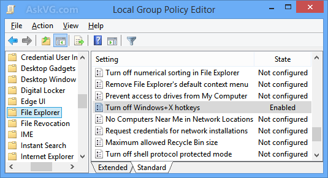
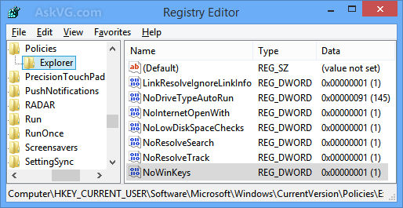
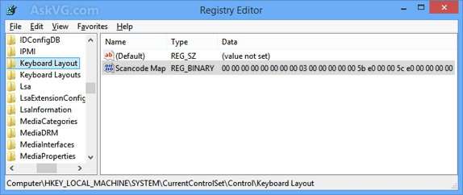
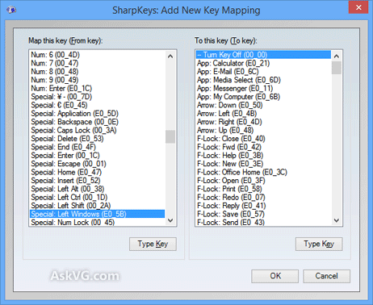

[Tip] How to Disable All WIN+ Keyboard Shortcuts (Hotkeys) in Windows?
If you use Windows operating system, you might be very well aware of the WIN key present on your computer's keyboard. Generally WIN key is used to quickly access Start Menu or Start Screen in Windows. But you can also use WIN key in combination with another key to access other programs or features in Windows. There are many such keyboard shortcuts (hotkeys) available in Windows which use WIN key plus other keys such as:
- WIN+R to launch RUN dialog box
- WIN+E to launch Windows Explorer
- WIN+L to lock
- WIN+P to launch External Display selection screen
- WIN+X to show WIN+X menu (Windows 8 and later)
- WIN+C to show Charms Bar (Windows 8 and later)
- WIN+PrtScn to capture computer screen and save screenshot (Windows 8 and later)
- WIN+S or WIN+F to launch Search
- WIN+D to show the Desktop
- WIN+M to minimize all running programs windows
- WIN+SHIFT+M to restore all running programs windows
- WIN+Break to show System Properties
- WIN+B to set focus on system tray (Taskbar notification area) icons
- WIN+T to set focus on Taskbar buttons
- WIN+number key (0-9) to switch between Quick Launch toolbar or Taskbar buttons
Although these WIN+ hotkeys are very useful and time saving but many people might find these built-in hotkeys annoying. For example, suppose you were using WIN+Arrow keys to change volume level in your Windows XP or Vista PC and when you upgraded your PC to Windows 7, the WIN+Arrow hotkey was automatically assigned to change windows alignment such as restore windows, maximize windows, cascade windows, etc as a part of Aero Snap feature. Now you don't want this new behavior and want to unbind or disable the built-in Windows 7 hotkey so that you can use your previous hotkey functionality.
There might be many other reasons behind disabling built-in WIN+ hotkeys in Windows. For example you often accidentally press WIN and another key in your keyboard so you may want to disable the WIN+ hotkey feature to prevent it from happening again.
If you also want to turn off WIN+ hotkeys in your Windows, this tutorial will definitely help you.
We have divided this tutorial in 2 parts:
- PART 1: Disable WIN+ hotkeys only
- PART 2: Disable WIN key completely
If you don't want to disable WIN key but want to disable its hotkeys such as WIN+R, WIN+E, etc, then you'll need to follow the steps given in part 1 of the tutorial.
If you want to completely disable WIN key so that it no longer works in your system, then you should follow part 2 of this tutorial. Completely disabling WIN key will also disable all its hotkeys.
PART 1: Disable WIN+ Hotkeys
With the help of following steps, you'll be able to turn off all WIN+ hotkeys available in your Windows.
You can use following 2 methods to disable WIN+ hotkeys:
- METHOD 1: Using Group Policy Editor (gpedit.msc)
- METHOD 2: Using Registry Editor (regedit)
METHOD 1: Using Group Policy Editor (gpedit.msc)
1. Type gpedit.msc in RUN or Start search box and press Enter. It'll open Group Policy Editor.
2. Now go to:
User Configuration -> Administrative Templates -> Windows Components -> Windows Explorer
or
User Configuration -> Administrative Templates -> Windows Components -> File Explorer
3. In right-side pane, look for "Turn off Windows+X hotkeys" option.
4. The option would be set to Not Configured. Double-click on it and set it to Enabled.

That's it. It'll immediately turn off all WIN+ hotkeys in your system.
PS: To re-enable the hotkeys in future, again set the "Turn off Windows+X hotkeys" option to Not Configured.
METHOD 2: Using Registry Editor (regedit)
If you don't want to use or can't use Group Policy Editor, you can take help of Registry Editor for the same task. Just follow these simple steps:
1. Type regedit in RUN or Start search box and press Enter. It'll open Registry Editor.
2. Now go to following key:
HKEY_CURRENT_USER\Software\Microsoft\Windows\CurrentVersion\Policies\Explorer
3. In right-side pane, create a new DWORD NoWinKeys and set its value to 1

4. Close Registry Editor and restart your system. After reboot the WIN+ hotkeys will be turned off in your system.
PS: To re-enable WIN+ hotkeys in future, delete the DWORD NoWinKeys created in step 3.
PART 2: Disable WIN Key Completely
If you want to completely turn off the WIN key in your system so that no one can use WIN key and all its related hotkeys, then this method will help you.
We'll use the built-in "Keyboard Scancode Mapping" feature of Windows to disable WIN key. If you remember we have used the same feature to disable Caps Lock key in following tutorial:
How to Disable Annoying Caps Lock Key in Windows?
If you follow the tutorial given at the above mentioned link and set the value of Scancode Map binary present in HKEY_LOCAL_ MACHINE\System\CurrentControlSet\Control\Keyboard Layout key to 00 00 00 00 00 00 00 00 03 00 00 00 00 00 5b e0 00 00 5c e0 00 00 00 00, it'll completely disable WIN key.

But modifying Registry and changing value of a binary is not an easy task, so we are going to use a very easy to use freeware "Sharp Keys" to do the same task automatically.
Sharp Keys is a free software which allows you to disable any desired key or change functionality of a key present on your computer keyboard.
1. First of all download the software using following article:
2. Run the software and click on Add button. Now click on "Type Key" button given in first section "Map this key (From key)". It'll open a small dialog box to detect a key. Now press WIN key and it'll store the key. Click on OK button.
3. Now leave the value of "To this key (To key)" section set to "-- Turn Key Off (00_00)".

4. Click on OK button and then click on "Write to Registry" button.
If you have two WIN keys (left and right) on your keyboard, repeat the same steps for the other WIN key as well.
It'll immediately save your settings to Windows Registry. Restart your computer and upon reboot, the WIN key will be disabled completely.
PS: If you want to enable WIN key again in future, run Sharp Keys tool again, select the WIN key entry given in the list and click on "Delete" button. At last click on "Write to Registry" button and restart your system.
Also Check:
How to Disable or Customize "Backspace Key" in Mozilla Firefox?
Share this article: Facebook | Twitter | Google+ | Reddit | Tell a friend
Posted in: Troubleshooting, Windows 7, Windows 8 / 8.1, Windows Vista, Windows XP
Other similar articles that may interest you
- Download Windows 8 Free Developer Preview
- SBar: Windows 7 Taskbar Clone for Windows XP and Vista
- Free Microsoft Office for iPhone, iPad and Android Tablets
- Download New Ultimate Extras for Windows Vista: A New Game, Sound Scheme and DreamScene Content Pack
- [Solution] How to Disable Menubar in Windows Vista and Later Explorer?
- Resource Hacker FX: Download Free Patcher to Enhance and Improve “Resource Hacker” Tool
qmlg
Can you give a screenshot on "Scancode Map" Binary after change the key value? I just know change OOBETimer key in Windows XP.
VG
^^ Added.
qmlg
@VG
Very helpful. Thanks.
vanutama
Just want to add that in Windows 7 (Laptop only not PC) , WIN + X will launch Windows Mobility Center.
Carsten
Complete failure for me. Maybe I didn't read carefully what to expect...
Part 1 (Win hotkeys) method 2 (Registry) did the opposite of what I wanted on my Win8.1:
I wanted to remove the new shortcuts for those stupid Win8 Charms because I use these keys for my own actions.
These Charms still "work" like a charm - damn!
I was used to "old" Win7-ones like Win+E, B, R - but THEY are gone now.
Does anyone know how to kill the "Charms" shortcuts or disable the Charms completely?
Carsten
corretion: ...not as bad as I wrote above...
I got rid of the two most hated Charms WIN+H ("Share") and WIN+U (read screen content I think) - both not mentioned above.
Still active are the Charms keys WIN+L, P, C.
TFDff
For reasons that I still do not fully comprehend, the issue with the Windows Key becoming virtually stuck and preventing me from having control over this and other computers has caused a great deal of time loss, and hardware costs. While I have tried a myriad of possible cures, go-arounds, s
Alexandar
thank you so much bro,Very helpful. Thanks
Greg
Nicely explained & did the job first time. Very helpful thank you know.
Kristen Chambers
This did not help me at all! I was trying semd an email for a job. Its that important.
Williams Galdamez
How do I disable in windows 7 Pro., Screen tips on the tool bars in every application, appears by itself like every 5 to 10 seconds and is driving me crazy. When an application is opened and you press the Alt key see what happens on the tool bar, my computer is doing that by itself without me pressing that key.
Anyone knows how to disable this option that can help?
Your help is really appreciated.
Pradeep
thank you so much bro,Very helpful. Thanks
Joseph
Thank you for posting this fix. Was very tired of losing my work thanks to disappearing pages when I'd accidentally trigger something!
claricel sumawang
Thank you for this, it really helps me a lot! im kinda annoyed every time i press L in the keyboard then the screen will automatically locked! when i press D in the keyboard it will delete the words that i have type! its annoying! but thanks to this! I follow the the method 1 and it works! thumbs up!
Aubrey TW
Brand new laptop. Use one note for screenclippling all the time but no longer available. This was no help at all, Message I received for first option - "No results for gpedit.msc"
2nd Option, "After Policies" my choices are completely different and nothing says anything about Winkeys.
Jules
Very clear instructions - for a behaviour that has been bugging me for a decade !!
BUT ..... "Turn off Windows+X hotkeys"
.... is not at this location:
"User Configuration -> Administrative Templates -> Windows Components -> Windows/File Explorer"
In gpedit.msc,
..... I can get down to "Windows Components" but there is no item/file "Windows/File" (or similar).
I'm using Win XP. Presumably this hotkey toggle is elsewhere.
Thanks
Sahitya Gupta
my some win shortcuts are working but some are not.
ok. i have an idea that first i turn off all shortcuts ..and then turn it on.
bt u have told how to turn them on again.